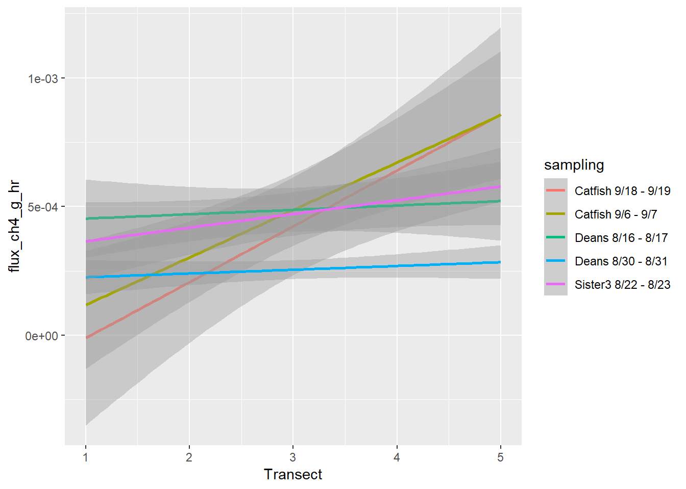

Chapter 2 Diffusive emissions
2.1 Deans Diffusive 8/16/22-8/17/22

## observed expected sd p.value
## 1 -0.19603854 -0.09090909 0.06605152 0.1114683
## 2 -0.12338695 -0.09090909 0.05195671 0.5319089
## 3 -0.13744874 -0.09090909 0.06598893 0.4806456
## 4 -0.14159355 -0.09090909 0.06542901 0.4385476
## 5 -0.12111358 -0.09090909 0.04342806 0.4867381
## 6 -0.12394586 -0.10000000 0.05407368 0.6578832
## 7 -0.13418915 -0.09090909 0.04986511 0.3854257
## 8 -0.07117076 -0.09090909 0.03509592 0.5738360
## observed expected sd p.value
## 1 -0.2068862 -0.09090909 0.06660112 0.08161909
## 2 -0.1234062 -0.09090909 0.06030199 0.58995122
## 3 -0.1319335 -0.09090909 0.05835766 0.48206658
## 4 -0.1425256 -0.09090909 0.06596750 0.43394795
## 5 -0.1372522 -0.09090909 0.04167703 0.26615579
## 6 -0.1087946 -0.10000000 0.04171236 0.83301280
## 7 -0.1219868 -0.09090909 0.06541540 0.63472823
## 8 -0.1106607 -0.09090909 0.06203446 0.750183552.2 Deans Diffusive 8/30/22-8/31/22

## observed expected sd p.value
## 1 0.04797846 -0.09090909 0.06517995 0.03310295
## 2 -0.10718065 -0.09090909 0.05862774 0.78136533
## 3 -0.06143521 -0.09090909 0.06564224 0.65342599
## 4 -0.01615960 -0.09090909 0.04649214 0.10788171
## 5 -0.03063754 -0.09090909 0.03642988 0.09803534
## 6 -0.04654868 -0.09090909 0.06330982 0.48349792
## 7 -0.08106676 -0.09090909 0.04295742 0.81877694
## 8 -0.01848617 -0.09090909 0.06444046 0.26106674
## observed expected sd p.value
## 1 -0.080340801 -0.09090909 0.06382986 0.86849562
## 2 -0.103096462 -0.09090909 0.06178554 0.84362970
## 3 -0.049759545 -0.09090909 0.06611463 0.53368088
## 4 -0.027523421 -0.09090909 0.03384116 0.06106357
## 5 -0.005622029 -0.09090909 0.06443437 0.18562699
## 6 -0.048943130 -0.09090909 0.06158883 0.49562529
## 7 -0.010886107 -0.09090909 0.04586524 0.08102986
## 8 -0.071990634 -0.09090909 0.06180035 0.759511632.4 Catfish Diffusive 9/6/22-9/7/22

## observed expected sd p.value
## 1 -0.16887062 -0.09090909 0.08850246 0.378373679
## 2 -0.17576829 -0.09090909 0.05236500 0.105117880
## 3 0.13523237 -0.09090909 0.08478955 0.007651093
## 4 -0.07164585 -0.09090909 0.07975055 0.809133734
## 5 -0.02024389 -0.09090909 0.04384772 0.107047946
## 6 0.11327446 -0.09090909 0.06737021 0.002439317
## 7 -0.15079927 -0.09090909 0.07010553 0.392946485
## 8 0.08430215 -0.09090909 0.07857011 0.025747524
## observed expected sd p.value
## 1 -0.18489968 -0.09090909 0.09201811 0.30704804
## 2 -0.18432016 -0.09090909 0.05918020 0.11446969
## 3 0.06000318 -0.09090909 0.08744185 0.08437284
## 4 -0.08811216 -0.09090909 0.08858157 0.97481128
## 5 -0.11817074 -0.09090909 0.08993513 0.76179411
## 6 -0.11799574 -0.09090909 0.07898134 0.73163606
## 7 -0.05786447 -0.09090909 0.08149652 0.68513003
## 8 -0.04049077 -0.09090909 0.08611965 0.558248502.5 Catfish Diffusive 9/18/22-9/19/22

## observed expected sd p.value
## 1 -0.06749332 -0.09090909 0.02625148 0.37240410
## 2 -0.08487496 -0.09090909 0.08919064 0.94606083
## 3 -0.14209241 -0.09090909 0.08828547 0.56208462
## 4 0.03989380 -0.09090909 0.06880631 0.05729803
## 5 -0.08315491 -0.09090909 0.03146748 0.80535810
## 6 0.02090098 -0.09090909 0.07066293 0.11358071
## 7 -0.05385346 -0.09090909 0.02802074 0.18602304
## 8 -0.12650291 -0.09090909 0.05495748 0.51720419
## observed expected sd p.value
## 1 0.09384828 -0.09090909 0.09043784 0.04106025
## 2 -0.05491720 -0.09090909 0.08386602 0.66780724
## 3 -0.04895380 -0.09090909 0.07719388 0.58678187
## 4 -0.03173677 -0.09090909 0.09025507 0.51207370
## 5 -0.13123938 -0.09090909 0.07556661 0.59354560
## 6 -0.14015907 -0.09090909 0.08577809 0.56586242
## 7 -0.07375381 -0.09090909 0.08378686 0.83776823
## 8 -0.12993992 -0.09090909 0.08692656 0.653425002.7 Pick Diffusive 9/13/22- 9/14/22

## observed expected sd p.value
## 1 -0.16394799 -0.09090909 0.09547387 0.4442628919
## 2 0.24807790 -0.09090909 0.10572295 0.0013442065
## 3 0.24051864 -0.09090909 0.10086143 0.0010163145
## 4 -0.16622877 -0.09090909 0.10956271 0.4917946600
## 5 -0.11574527 -0.09090909 0.10813408 0.8183408688
## 6 0.05731481 -0.09090909 0.11665303 0.2038570721
## 7 0.07394287 -0.09090909 0.10350214 0.1112186230
## 8 0.20652015 -0.09090909 0.08883696 0.0008138677
## observed expected sd p.value
## 1 0.37653076 -0.09090909 0.1165119 6.021963e-05
## 2 0.38760773 -0.09090909 0.1177170 4.803738e-05
## 3 0.20346342 -0.09090909 0.1096610 7.266306e-03
## 4 -0.08655621 -0.09090909 0.1058803 9.672072e-01
## 5 0.15286988 -0.09090909 0.1007004 1.548497e-02
## 6 0.06249622 -0.09090909 0.1160476 1.861957e-01
## 7 0.15934786 -0.09090909 0.1094544 2.223062e-02
## 8 0.43126284 -0.09090909 0.1168583 7.879888e-062.8 Sister3 Diffusive 8/22/22-8/23/22

## observed expected sd p.value
## 1 0.008122915 -0.09090909 0.06344759 0.118559781
## 2 -0.138958734 -0.09090909 0.06146336 0.434355157
## 3 -0.064728580 -0.09090909 0.05496587 0.633857219
## 4 0.070766498 -0.09090909 0.06106764 0.008109326
## 5 -0.006471305 -0.09090909 0.06138617 0.168970882
## 6 -0.084700102 -0.09090909 0.02845558 0.827273822
## 7 -0.138068047 -0.09090909 0.06381309 0.459896691
## 8 -0.102303654 -0.09090909 0.07547270 0.879994684
## observed expected sd p.value
## 1 -0.10407520 -0.09090909 0.07223436 0.85537134
## 2 0.03484246 -0.09090909 0.07324048 0.08598507
## 3 -0.10627065 -0.09090909 0.07219304 0.83149501
## 4 -0.10823414 -0.09090909 0.07494682 0.81718699
## 5 -0.16790689 -0.09090909 0.07361802 0.29560274
## 6 -0.14664961 -0.09090909 0.06171755 0.36644359
## 7 -0.08143887 -0.09090909 0.05860214 0.87161927
## 8 -0.15061608 -0.09090909 0.07346754 0.41639071diffusion_loc <- diffusion %>% mutate(date = date(start_time)) %>%
mutate(sampling = case_when(
date == "2022-08-16" ~ "Deans 8/16 - 8/17",
date == "2022-08-17" ~ "Deans 8/16 - 8/17",
date == "2022-08-30" ~ "Deans 8/30 - 8/31",
date == "2022-08-31" ~ "Deans 8/30 - 8/31",
date == "2022-09-06" ~ "Catfish 9/6 - 9/7",
date == "2022-09-07" ~ "Catfish 9/6 - 9/7",
date == "2022-09-18" ~ "Catfish 9/18 - 9/19",
date == "2022-09-19" ~ "Catfish 9/18 - 9/19",
date == "2022-09-13" ~ "Pick 9/13 - 9/14",
date == "2022-09-14" ~ "Pick 9/13 - 9/14",
date == "2022-08-22" ~ "Sister3 8/22 - 8/23",
date == "2022-08-23" ~ "Sister3 8/22 - 8/23"
)) %>%
filter(is.na(sampling)==FALSE) %>%
mutate(Transect = str_sub(location, 2, 2) %>% as.numeric(), Loc = str_sub(location, 3, 3) %>% as.factor())
diff.mod.ch4 <- lmer(flux_ch4_g_hr ~ Transect + Loc + (1|sampling), data = diffusion_loc)
summary(diff.mod.ch4)## Linear mixed model fit by REML. t-tests use Satterthwaite's method ['lmerModLmerTest']
## Formula: flux_ch4_g_hr ~ Transect + Loc + (1 | sampling)
## Data: diffusion_loc
##
## REML criterion at convergence: -4663.5
##
## Scaled residuals:
## Min 1Q Median 3Q Max
## -2.5162 -0.2554 -0.0122 0.1549 10.4023
##
## Random effects:
## Groups Name Variance Std.Dev.
## sampling (Intercept) 2.255e-05 0.004749
## Residual 1.464e-05 0.003827
## Number of obs: 575, groups: sampling, 6
##
## Fixed effects:
## Estimate Std. Error df t value Pr(>|t|)
## (Intercept) 2.548e-03 2.009e-03 5.688e+00 1.268 0.25415
## Transect -3.377e-04 1.178e-04 5.640e+02 -2.866 0.00431 **
## LocB 1.677e-03 5.042e-04 5.640e+02 3.326 0.00094 ***
## LocC 5.074e-04 5.523e-04 5.640e+02 0.919 0.35867
## LocD 4.171e-04 5.538e-04 5.640e+02 0.753 0.45163
## LocE 1.041e-03 5.042e-04 5.640e+02 2.064 0.03945 *
## ---
## Signif. codes: 0 '***' 0.001 '**' 0.01 '*' 0.05 '.' 0.1 ' ' 1
##
## Correlation of Fixed Effects:
## (Intr) Trnsct LocB LocC LocD
## Transect -0.176
## LocB -0.151 0.000
## LocC -0.137 0.000 0.548
## LocD -0.137 0.002 0.546 0.499
## LocE -0.151 0.000 0.600 0.548 0.546r2_nakagawa(diff.mod.ch4)## # R2 for Mixed Models
##
## Conditional R2: 0.612
## Marginal R2: 0.015diff.mod.co2 <- lmer(flux_co2_g_hr ~ Transect + Loc + (1|sampling), data = diffusion_loc)
summary(diff.mod.co2)## Linear mixed model fit by REML. t-tests use Satterthwaite's method ['lmerModLmerTest']
## Formula: flux_co2_g_hr ~ Transect + Loc + (1 | sampling)
## Data: diffusion_loc
##
## REML criterion at convergence: -634.6
##
## Scaled residuals:
## Min 1Q Median 3Q Max
## -5.8101 -0.3034 0.0067 0.2828 5.6719
##
## Random effects:
## Groups Name Variance Std.Dev.
## sampling (Intercept) 0.003649 0.06041
## Residual 0.017712 0.13309
## Number of obs: 575, groups: sampling, 6
##
## Fixed effects:
## Estimate Std. Error df t value Pr(>|t|)
## (Intercept) 0.119746 0.030721 10.886664 3.898 0.00253 **
## Transect -0.021439 0.004097 564.000942 -5.232 2.37e-07 ***
## LocB 0.055864 0.017536 564.000478 3.186 0.00152 **
## LocC 0.022755 0.019209 564.000478 1.185 0.23669
## LocD 0.052013 0.019260 564.003018 2.700 0.00713 **
## LocE 0.051748 0.017536 564.000478 2.951 0.00330 **
## ---
## Signif. codes: 0 '***' 0.001 '**' 0.01 '*' 0.05 '.' 0.1 ' ' 1
##
## Correlation of Fixed Effects:
## (Intr) Trnsct LocB LocC LocD
## Transect -0.400
## LocB -0.342 0.000
## LocC -0.313 0.000 0.548
## LocD -0.313 0.002 0.546 0.499
## LocE -0.342 0.000 0.600 0.548 0.546r2_nakagawa(diff.mod.co2)## # R2 for Mixed Models
##
## Conditional R2: 0.218
## Marginal R2: 0.057ggplot(diffusion_loc %>% filter(Site != "Pick"), aes(Transect, flux_ch4_g_hr, color = sampling))+geom_smooth(method = "lm")## `geom_smooth()` using formula = 'y ~ x'